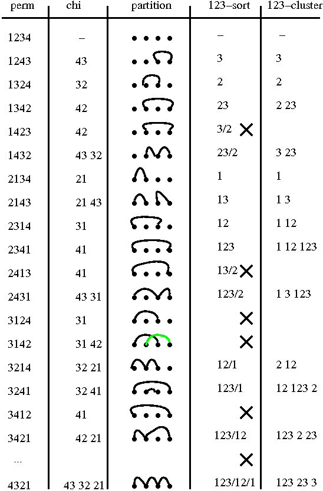
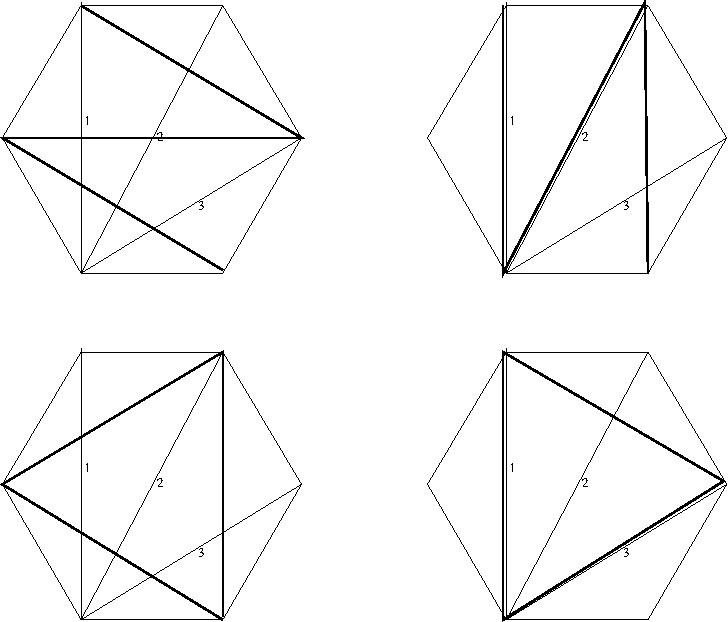

(back)
TO DO Combinatorics section
Symmetric group/geometry/set partition Notes
There is no low-dimensional geometry in the symmetric group.
But there are substructures
and enhancements with geometrical features
(such as Coxeter generators - see e.g. [Humphreys]).
This leads to various interesting bits of maths - in particular
some combinatorics.
The line and the plane
We start by explaining the figure


This figure (from [MarshMartin06]) summarizes various maps.
The first is the chi map
from S_n to the set of set partitions of a set of order n.
For a perm p
(an element of S_n written as the image of sequence 123...n _after_ the
permutation has been applied)
then chi(p) is the relation with pair (i,j)
whenever i>j and i immediately precedes j in p.
(Note here that we are using an underlying property of the set
being permuted - a property not intrinsic to S_n.)
The partition obtained from this relation is the RST closure.
Note that this map is not injective.
Next we need the notion of c-sort.
Let c be a word in the Coxeter generators containing one copy of each.
(We can take c=s_1 s_2 ... s_{n-1} here.)
Then every perm may be obtained from some power of c (as a word)
by deleting some factors.
Consider the set of factors kept from each `block'
(copy of c). If the set
from block i is a subset of the set from block i-1 for all i then
p is c-sortable.
CLAIM: chi is a bijection from c-sortable elements to non-crossing partitions.
Next we need a bijection from c-sortable elements to c-clusters.
One fixes a reference triangulation of the n+2-gon
- in our case we take a fan triangulation,
with the diagonals numbered consecutively.
Each triangulation then gives (relative to the reference)
a cluster - the list of
sets of numbered fan diagonals crossed by each diagonal.
...
Homework:
c-clusters are in bijection with diagonal triangulations of the n-gon.
How can we lift this
whole setup
to m+2-angulations of the sm+2-gon?
To do
This is a work in progress. Here we note some jobs that need doing
(entirely for my own organisational benefit).
Suggested further reading
On representation theory of the symmetric group
Algebras and Representations Leeds undergraduate module
References on representation theory of the symmetric group
Khovanov's rep theory resources
Benson, Representations and Cohomology: Basic representation theory of finite groups and associative algebras
J A Green, Polynomial representations of GLn (Springer)
(version with K Erdmann and M Schocker)
Assem, Simson and Skowronski, Vol.1 (LMS ST65)
Curtis and Reiner, Representation theory of finite groups and associative algebras, Wiley Interscience
Curtis and Reiner, Methods of representation theory I, Wiley Interscience
Hamermesh, Group Theory
Gabriel and Roiter, Representations of finite-dimensional algebras
Jain and Parvathi, Noncommutative rings, group rings, diagram algebras, and their applications
...
Organiser:
Paul